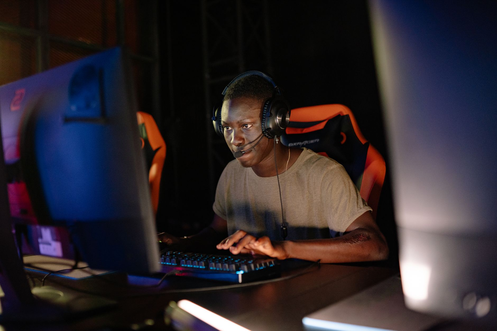

What is HLTV Brain
For years, HLTV has been the undisputed gold standard for Counter-Strike news, match results, and player statistics. However, the sheer volume of data generated by the professional scene has become overwhelming for even the most dedicated analysts. HLTV Brain is the organization's ambitious response to this data explosion, serving as an advanced analytical engine powered by artificial intelligence.
Unlike traditional databases that simply list kills, deaths, and ratings, HLTV Brain aims to provide context. It is designed to parse through thousands of match histories to find patterns that the human eye might miss. This includes identifying subtle shifts in player performance over specific maps, analyzing utility usage trends, and predicting how certain team compositions might fare against specific opponents.
The tool is not just a spreadsheet on steroids; it is a predictive and descriptive intelligence layer. By integrating machine learning models with the massive historical database that HLTV has built over decades, the platform intends to offer insights that were previously only available to top-tier professional coaching staffs.
The core features of the beta
The closed beta phase is a critical step for HLTV to refine the accuracy of its algorithms. During this period, a select group of users will have access to experimental features that aim to redefine how we view professional Counter-Strike. The focus is on making complex data accessible to everyone from casual fans to hardcore analysts.
By testing these features in a controlled environment, the developers can ensure that the AI does not produce hallucinations or incorrect statistical correlations. This precision is vital because the esports community relies heavily on the accuracy of HLTV's data for betting, scouting, and professional analysis.
Why AI matters in modern esports
The evolution of Counter-Strike 2 has introduced new complexities in gameplay, including volumetric smoke grenades and altered movement mechanics. As the game evolves, the methods used to analyze it must also evolve. Static statistics are no longer sufficient to capture the nuance of modern tactical play.
Data is the new currency in professional esports, but only if you know how to spend it wisely. HLTV Brain represents the transition from raw information to actionable intelligence.
Artificial intelligence allows for the processing of multi-dimensional data points simultaneously. For example, an AI can correlate a player's positioning during a specific round with their success rate in subsequent duels. This level of granularity is what separates a good analyst from a great one, and HLTV Brain is democratizing that capability.
Who can access the tool
Currently, access to the HLTV Brain closed beta is highly restricted. The developers are looking for a diverse group of testers to provide feedback. This includes professional players, coaches, content creators, and dedicated statistical enthusiasts who can stress-test the system's logic.
The selection process is expected to be rigorous. HLTV wants to ensure that the feedback received covers a wide spectrum of use cases. If the tool works well for a professional coach, it must also be intuitive enough for a fan watching a live stream to understand the implications of a specific statistic.
While many fans may feel disappointed by the limited access, the beta is a necessary phase. The goal is to build a robust, error-free product that can eventually be rolled out to the wider community, potentially through a subscription model or as a premium feature for HLTV supporters.
The future of competitive analysis
As we look toward the future, the integration of AI into esports is inevitable. We are seeing similar trends in football and basketball, where data science plays a massive role in player recruitment and in-game strategy. HLTV Brain is positioning itself at the forefront of this movement within the tactical shooter genre.
The implications for the professional scene are massive. Teams may soon use these tools during their preparation phases to simulate matches or to find weaknesses in their upcoming opponents. This could lead to a higher level of tactical sophistication in tournaments worldwide.
For fans, this means a much richer viewing experience. Imagine watching a major tournament and having real-time AI insights telling you why a certain play was statistically significant or how likely a team is to win the next round based on their current economy and momentum.
Stay updated with esports news
The world of esports is moving faster than ever, with new technologies and massive tournaments constantly reshaping the landscape. Keeping up with developments like the HLTV Brain launch is essential for anyone serious about the competitive scene.
Whether you are interested in the technical side of AI or the high-stakes drama of professional tournaments, there is always something new to discover. For those looking to dive deeper into the competitive structure of major events, be sure to check out our detailed breakdown of the Thunderpick World Championship: Teams, Format, and Prizes at https://dhyey.bond/blog/thunderpick-world-championship-teams-format-and-prizes/.
Stay tuned to Dhyey Bond for more breaking news, deep dives, and expert analysis on the games and technologies that are defining the future of esports.
See Also
If you enjoyed this Esports News article, check out Thunderpick World Championship: Teams, Format, and Prizes for more useful reading.